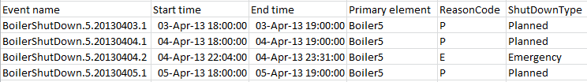

You can use the Explore Events function to explore and analyze events related to a particular PI AF element. For example, suppose you want to analyze the downtime of a particular boiler. You can retrieve all the downtime events for that boiler into Microsoft Excel and create a chart to analyze the data. In this case, you might find events that match an element name and event name.
Procedure
-
Select a cell in the worksheet where you want PI DataLink to start inserting the function array that contains the events.
-
On the PI DataLink tab, in the Events group, click Explore to open the Explore Events task pane.
-
Specify the criteria to find the events you are interested in. As you enter criteria, the Preview list updates to show the events that match the entered criteria.
- In the Database field, enter the PI AF database that stores the events.
Specify in the format \\ ServerName\ DatabaseName. Click the field to open a list of databases that contain event templates in connected PI AF servers.
- In the Search start and Search end fields specify the time period that you want to search for active events.
Enter a PI time expression. For example, to retrieve events that were active during the last month, enter *-1mo in the Search start field and * in the Search end field.
Tip: To find events with a more specific relationship to this time period, such as events that started or ended during this time period, expand More search options and select an alternative method from the Search mode list.
-
As necessary, specify additional criteria to refine the events that the function returns (shown in the Preview list).
See Explore Events task-pane reference for a complete list of available fields.
For example, use the Event name field to limit returned events to those with a particular name. You might enter *shut* to find all events that contain shut in their name, such as shutdown and BoilerShutdown. If you leave the default entry, * , the function will find events with any name.
Similarly, use the Element name field to limit returned events to those associated with particular elements. You might enter Boiler5 to analyze events associated with that boiler.
-
Specify the worksheet output:
-
From the Columns to display list, select the columns to include in the function array and set the column order.
The list contains the names of attributes. By default, the list includes the virtual attributes generated for all events and the event attributes from the selected event template. You can:
-
Select the Select all check box to include all the listed attributes as columns in the returned function array.
-
Select a check box to include the attribute, or clear a check box to exclude an attribute as a column in the returned function array.
-
Click to open the Add Attributes window where you can select additional attributes to include as columns in the function array. See Add attribute columns to the Explore Events task pane.
-
Type the name of an event attribute next to the blank check box at the bottom of the list.
-
Right-click an attribute, click Insert attribute to insert a blank attribute above the selected attribute, and then type the name of an event attribute.
-
Select an attribute and click to move the attribute up in the list.
-
Select an attribute and click to move the attribute down in the list.
-
Select an attribute and click to remove the attribute from the list.
-
Right-click an attribute and then click Delete attribute to remove the attribute from the list.
-
Verify that the Output cell field contains the worksheet cell where you want to insert the top-left corner of the function array.
If you clicked a cell before opening the task pane, PI DataLink automatically inserts that cell into this field.
-
Click OK to insert the function array into the worksheet.

After you finish
Use Excel features to analyze your data. For example, you might create a chart.